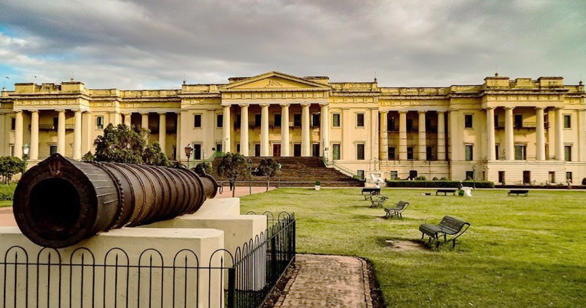

- Location: Murshidabad, West Bengal, India
- Built: 1829
- Commissioned By: Nawab Nazim Humayun Jah
- Architect: Duncan MacLeod (British architect)
- Architecture Style: Indo-European / Greek Doric style
- Material Used: Brick and lime mortar
- Purpose: Royal residence and administrative office
- Features: 1000 doors (real and fake), museum with 20 galleries, rare manuscripts, paintings, weapons
- Opening Hours: 9:00 AM - 5:00 PM (Closed on Fridays)
- Entry Fee: ₹25 for Indians, ₹300 for foreigners (Museum access)
- Maintained By: Archaeological Survey of India (ASI)
- Popular For: History lovers, architecture, photography, heritage tours
- Nearby Landmarks: Nizamat Imambara, Katra Masjid, Wasif Manzil